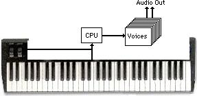
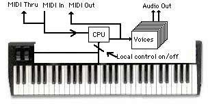

MIDI hardware consists of equipment with five pin DIN jacks (females) and cables with five pin DIN plugs (males) at both ends. Most well equipped units will have a MIDI IN, a MIDI OUT, and a MIDI THRU jack, usually located on the back panel of the instrument. To fully understand these MIDI jacks' functions, we shall look at a simplified diagram of a synthesizer's internal workings.

The above diagram shows that the keyboard and controllers (levers, wheels, pedals, etc.) are connected to the CPU (Central Processing Unit), which is in turn connected to the individual synthesizer voice channels. Information from the keyboard and controllers (note on/off, pitch bend, sustain pedal on/off, etc.) is received by the CPU, which sends that information to the appropriate voice channel according to an internal voice assignment routine or algorithm for actual sound production. The next diagram shows the addition of MIDI into this synthesizer architecture.

From the above illustration you can see that any information arriving from an external source via the MIDI IN jack is processed by the CPU just as if it came from the instrument's own keyboard or controllers. Information arriving at the MIDI IN jack is also passed unaffected out the MIDI THRU jack, allowing a "Daisy Chain" type of equipment configuration. Information generated by the instrument's keyboard, controllers, or front-panel controls is sent out the MIDI OUT jack at the same time it is sent to the CPU. An external instrument's CPU will then process this information when it arrives at that instrument's MIDI IN jack. Note too that an instrument may also send information about its sounds and settings from the CPU through the MIDI Out jack. This is often done using the System Exclusive data format. It is very important to understand which signals are present at each of the three MIDI ports in order to effectively configure and control your own MIDI set-up.
Before we discuss how MIDI instruments are interconnected and how signals flow between devices, it is probably a good idea to first understand what these signals are and how this performance control information is communicated. MIDI is much like a language that electronic devices use to communicate with each other. Let's take a look at this language.